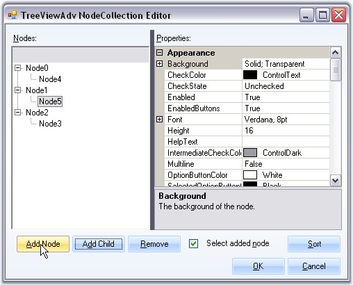
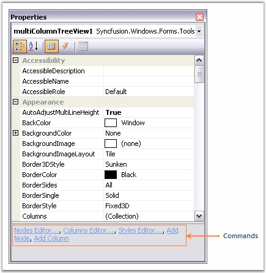
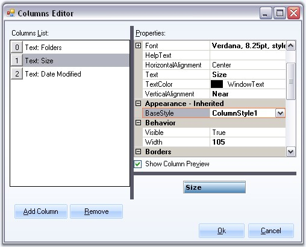
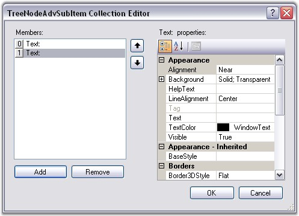

The following Editors are available for changing the appearance and behavior of the MultiColumnTreeView control.
TreeViewAdv NodeCollection Editor
This editor lets you add nodes,
SubItems for the nodes and customize them using various property
settings.

Figure 1186: TreeViewAdv NodeCollection Editor
This editor can be accessed using the below options.
· Through the Context Menu of the control during designtime.
· Using MultiColumnTreeView.Nodes property in the property Grid.
· Command at the bottom of the property grid.

Figure 1187: Properties Grid Commands
Columns Editor
This lets you add columns and customize those columns appearance with style settings.

Figure 1188: Columns Editor
This editor can be accessed using the following options.
· Through the Context Menu of the control during designtime.
· Using MultiColumnTreeView.Columns property in the property Grid.
· Command at the bottom of the property grid.
TreeNodeAdvSubItems Collection Editor
This editor lets you add subitems to the nodes and customize the subitems using the property settings. It can be accessed through Node Collection Editor and selecting the SubItems Collection property.

Figure 1189: TreeNodeAdvSubItem Collection Editor
Styles Editor
This editor comes with default styles and also lets you add new style and apply to the nodes, subitems, and so on. The property settings are discussed in Styles Architecture.

Figure 1190: BaseStyles Collection Editor
This editor can be accessed using the below options.
· Through the Context Menu of the control during designtime.
· Using MultiColumnTreeView.BaseStyles property in the property Grid.
· Command at the bottom of the property grid.